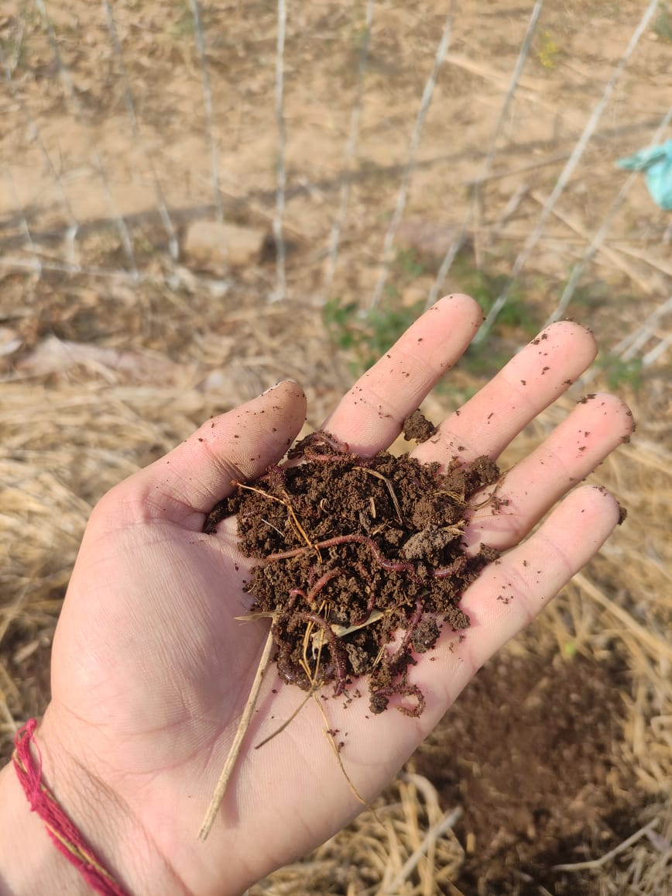

Here is some visual representation of our company.This visual representation also represents,how the vermicompost is formed and the process of Vermicomposting.

Red Wiggler Worms
Red wigglers, or Eisenia foetida, are the best compost worms. Unlike your everyday night crawlers, they live well in close, highly populated conditions and don't burrow.

Vermi Beds
Vermi beds represents the future in modern compost technology. Vermi Beds are a smart choice for organic agricultural farmers to get higher quality crop yields.
Watering Vermi Beds
The beds are maintained at about 40 - 50% moisture content and a temperature of 20 - 30o C by sprinkling water over the beds.

Vermi Beds Alignment
Normally the beds are 75 cm - 90 cm thick depending on the provision of filter for drainage of excess water. The entire bed area could be above the ground.